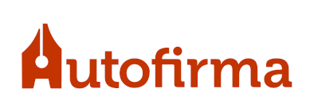

A aplicación Autofirma permite realizar de forma sinxela firmas electrónicas avanzadas sobre ficheiros locais.
Para simplificar ao usuario o proceso, determínase automaticamente o formato de firma a utilizar en base ao ficheiro de datos seleccionado. O usuario pode modificar o formato de firma por defecto para cada tipo de ficheiro desde o menú de preferencias.
Todas as asinas CAdES, XAdES e PAdES-BES xeradas por "Autofirma" realízanse conforme os perfís Baseline. Non así, asínalas PAdES Básicas.
Autofirma está deseñada para utilizar DNI electrónico (DNIe) como dispositivo preferente para a creación de firmas en sistemas con lector de cartóns intelixentes instalado, aínda que pode facer uso de calquera outro certificado instalado no sistema operativo. Autofirma é compatible con DNIe 2.0 e DNIe 3.0, a través de chip de contactos e NFC. Cando se utiliza un DNIe, selecciónase automaticamente o certificado de firma.
O uso de Autofirma é moi sinxelo, contando unicamente con tres pantallas na súa interface de usuario:
Pode acceder en calquera momento a esta xanela de axuda pulsando a tecla F1 (⌘+? en macOS).
Os produtos da Suite de @firma poden conter entre os algoritmos dispoñibles, algúns non recomendados pola Guía 807 do Esquema Nacional de Seguridade (ENS; editada polo Centro Criptolóxico Nacional, CCN) vixente no momento de publicación deste documento. Polo que queda baixo a responsabilidade das aplicacións que fan uso destes produtos o configurar adecuadamente as chamadas aos mesmos para xerar o resultado esperado, válido e adecuado para ese momento e o nivel de seguridade desexado, utilizando para iso algoritmos da familia XA-2 tal e como especifica esta norma para a xeración de firmas electrónicas.
Pode consultar a norma vixente desde a seguinte ligazón:
https://www.ccn-cert.cni.es/series-ccn-stic/800-guia-esquema-nacional-de-seguridade/513-ccn-stic-807-criptologia-de-emprego-en-o-ens/file.html
Autofirma distribúese para o seu uso con licenzas GPLv2 e EUPL v1.1. Máis información.